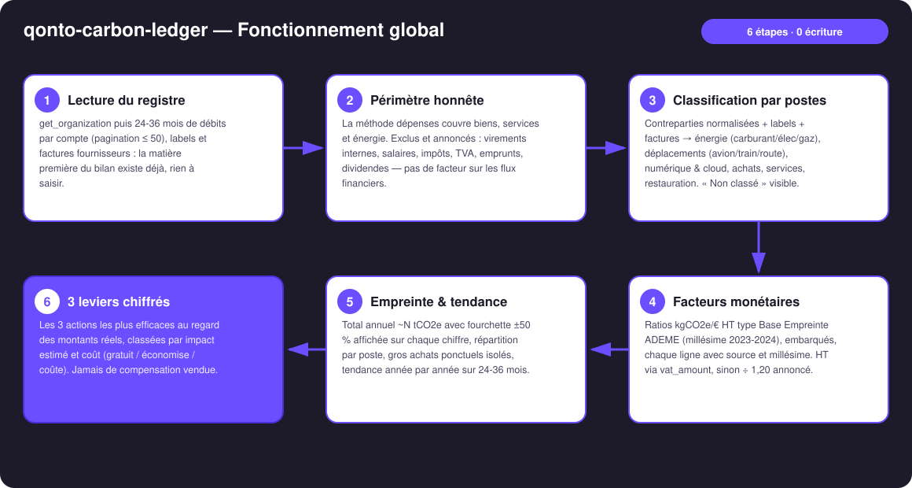
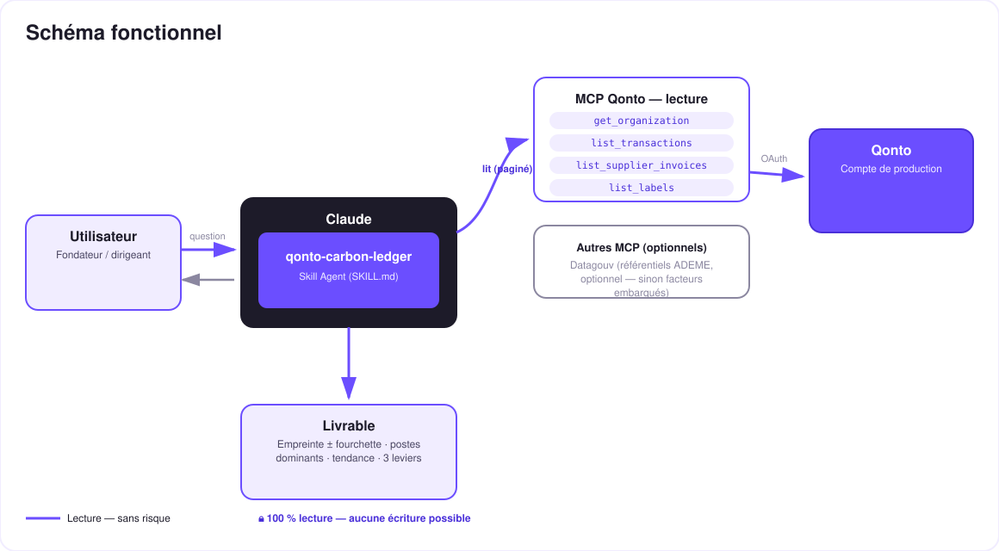

Ton relevé bancaire est un registre carbone qui s'ignore — l'empreinte approchée de ta boîte, depuis ses dépenses réelles.
Le bilan carbone, les TPE ne le font jamais — pas par désintérêt, mais faute de données, de temps et de budget consultant. Or les dépenses bancaires SONT une donnée : chaque euro dépensé a une empreinte. Le skill lit le compte Qonto et en tire :
Débits classés par postes d'émission × facteurs monétaires (kgCO2e/€) type Base Empreinte ADEME — incertitude ±50 % sur chaque chiffre.
Les 2-3 postes qui concentrent l'essentiel des émissions, rapprochés des montants réellement dépensés.
Année par année sur 24-36 mois d'historique — l'empreinte monte ou descend, et pourquoi.
Les actions les plus efficaces au regard des dépenses réelles — le levier n°1 est souvent gratuit. Jamais de compensation vendue.
C'est un pré-bilan d'orientation, pas un bilan réglementaire — et le skill le martèle lui-même.
| Prérequis | Détail | Obligatoire |
|---|---|---|
| Compte Qonto production | Le skill s'adapte à toute organisation — get_organization d'abord, zéro donnée en dur | ✅ |
| Pays | Facteurs calibrés France / UE. Autres pays Qonto (DE, ES, IT…) : méthode identique, facteurs à adapter (mix électrique, prix) — annoncé clairement, estimation quand même produite et taguée | ℹ️ détecté |
| MCP Qonto connecté | Connecteur officiel (claude.ai / Claude Desktop), login OAuth | ✅ |
| Historique ≥ 6 mois | En dessous : annualisation avec avertissement explicite, jamais d'extrapolation silencieuse. 24-36 mois pour la tendance | ⭕ |
| MCP Datagouv | Optionnel — recoupement avec les référentiels ADEME ; sinon facteurs embarqués (sourcés, millésimés) | ⭕ |
| Labels Qonto | Optionnels — améliorent la classification des débits ambigus | ⭕ |

list_cash_flow_categories renvoyant 403 sur le connecteur claude.ai, le repli se fait sur les labelsvat_amount quand il existe, sinon ÷ 1,20 — avec le nombre de lignes estimées annoncé
Que des traits pleins : ce skill est 100 % lecture. Aucune écriture, aucune demande de virement, aucun paiement — il n'y a littéralement rien à approuver. Le seul livrable est de l'information : des tableaux et un dashboard. Et il ne vend jamais de compensation carbone.
| Poste | Facteur (kgCO2e/€ HT, valeur centrale indicative) |
|---|---|
| Énergie — carburant | ~1,5 |
| Énergie — électricité (mix FR) | ~0,25 |
| Énergie — gaz / chauffage | ~1,9 |
| Déplacements — avion | ~1,2 |
| Déplacements — train (FR) | ~0,05 |
| Déplacements — route, taxi/VTC, fret | ~0,5 |
| Numérique, cloud & SaaS | ~0,3 |
| Achats de biens & équipement | ~0,5 |
| Services & prestations intellectuelles | ~0,15 |
| Restauration & alimentation | ~0,7 |
| Assurance & frais bancaires | ~0,1 |
Ratios monétaires type Base Empreinte ADEME, millésime 2023-2024, ±50 % et plus — c'est inhérent à la méthode monétaire (un vol pas cher ≠ peu d'émissions). Chaque ligne affichée porte son facteur, sa source et son millésime ; recoupement Datagouv proposé si le MCP est présent.
| Sortie | Format | Quand |
|---|---|---|
| Réponse dans la conversation | Tableaux markdown : empreinte + fourchette, postes (facteur + source + millésime par ligne), tendance, 3 leviers | Toujours — c'est la base |
| Dashboard interactif | Fichier/artifact HTML : jauge avec bande d'incertitude, barres par poste, tendance, leviers | Si l'hôte affiche les fichiers (artifacts claude.ai, Claude Desktop, Claude Code) ; repli automatique sur les tableaux sinon |
La démo ≤ 3 min jointe à la PR suit le storyboard : le problème (les TPE n'ont « pas de données ») → lecture et classification du compte → l'honnêteté sur l'incertitude → le moment « ton empreinte en 2 minutes » → dashboard et leviers. Tournée en live sur un compte de production réel. Le script détaillé de tournage est conservé en interne (hors dépôt).
| Idée | Effort | Note |
|---|---|---|
| Recoupement Datagouv automatique (référentiels ADEME à jour) | Faible | Multi-MCP optionnel — détecté dynamiquement, sinon facteurs embarqués |
| Facteurs par pays (DE · ES · IT · AT · NL · BE · PT) | Moyen | Qonto est paneuropéen ; même méthode, mix électrique et prix locaux |
| Comparaison sectorielle de l'empreinte | Faible | Croisement naturel avec qonto-sector-benchmark (même esprit : tes flux × référentiels publics) |
| Suivi mensuel des leviers | Moyen | L'empreinte baisse-t-elle vraiment ? Relance sur les mêmes postes |
| Affinage ligne à ligne par facture fournisseur | Moyen | Quand les factures fournisseurs sont riches |